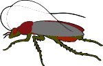

| Ethics Dictionary | Conditions Formulas | PTS Glossary | FAQs |
|
|
| Ethics Dictionary | Conditions Formulas | PTS Glossary | FAQs | |
Appendix
Admin Scales - Examples
You can figure out an Admin Scale for just about anything.
Philosophically an Admin Scale could be said to be the successful journey of a dream from one's individual universe - or imagination - into the physical universe. You could say the Admin Scale is the anatomy of a postulate that works. You could say an Admin Scale is God's plan for a creation or creature. You could say many other things. Obviously the journey from idea to reality has many twists and turns. You can't expect it to be possible for you to plan it in detail from the outset. The Admin Scale is thus not a map. But it could be said to be a compass as it keeps you pointed in the right direction and makes it possible to adjust your course.
R. Hubbard stated you can figure out the Admin Scale for anything from golf balls to cockroaches. Here are some examples held in broad terms. They are intended to help you think with the subject, not to be taken too literal.
Golf Ball Admin Scale
Golf Ball |
Goals | 1. Capable of reaching the holes of a gulf course quickly and being very controllable with a golf club. 2. A superior quality ball that has become the most used ball among golfers. |
| Purposes | 1. Able to withstand repeated beatings of a club and the conditions of the golf course. 2. Able to to deliver a long and predictable projectory when hit by a club. 3. Easy to see and find. 4. Easy and cheap to mass produce. | |
| Policies | Specifications to form, size, weight, material, color and method of manufacture. | |
| Plans | How to improve its basic physical capabilites. Try different materials, designs and shapes. | |
| Programs | Make and test a golf ball made of a certain plastic. Make and test a golf ball with built in sattelite navigation. | |
| Projects | Find the suitable parts and materials for above. | |
| Orders | Get bussy on it. | |
| Ideal Scenes | An improved golf ball accepted by top players and golfers in numbers as it is tougher, more visible, easier to find and easier to shoot far with precision than existing balls. | |
| Statistics | Number of 'hole in one' plays it produces. Number of players using it. Percentage of balls recovered under difficult circumstances. | |
| Valuable Final Products |
Won tournaments and contests using this new and better ball. |
Note: It may be possible to discover the postulate (Goal or basic intention) behind any physical object or phenomena and from that formulate an Admin Scale. This may be more of an intellectual challenge or religious exercise than science or fact. But theoretically you could find the postulate behind for instance gold and other chemical substances as well as weather phenomena. All this is unexplored territory in terms of Standard Clearing Technology but would tie in with many belief systems. In many forms of religion phenomena in nature are seen as live expressions and animated by God or spirits. If this is the case you can also find the Goal or postulate behind each of them and figure out the Admin Scales. If you take a manufactured item there certainly is an Admin Scale built into it.
Cockroach Admin Scale
|
 Cockroach |
Goals | To survive as a species and populate all of the earth. |
| Purposes | Find good living conditions and adapt to new places. Find plenty to eat, find good mates and produce multiple new roaches. | |
| Policies | Eat
anything edible. Stay hidden as long as possible. Produce enough new
roaches to survive anything as a species. The complex patterns of behavior, known as instinctual behavior. |
|
| Plans | Start new roach colonies in many new places. | |
| Programs | Start a roach population in your kitchen. | |
| Projects | let's eat the leftovers. | |
| Orders | Watch out for the cat! | |
| Ideal Scenes | An undisturbed environment with plenty of food and suitable temperature; where we can multiply, grow big and old and leave it to our growing population of offspring | |
| Statistics | Average lifespan. Number of offspring. | |
| Valuable Final Products |
Thriving individual roaches, well fed and producing successful offspring in great numbers. |
Note: when it comes to formulating an Admin Scale for a species the Goal would be some version of survival along the species' Dynamics: 1. The individual member. How they gather food and how they protect and defend themselves. 2. Their system of procreation and raising their offspring. 3. How they interact in groups of their own kind. 4. How they ensure the survival of the species. 5. What species they befriend or prey on. 6. What physical environment (nature, ecosystem, etc.) they require. These first six Dynamics are very observable and part of any good description of a species in biology and zoology. Obviously summing all this up in a short statement, the Goal of a species, takes study and intuition. The Goal the species operate on could be said to be their seventh Dynamic.
It is obvious that each species work on their own scale. The Goal and Admin Scale of eagles are different from that of cockroaches. They have very different awareness, outlooks, criteria for success and ways of life.
Couple with Children Admin Scale

Couple |
Goals | A happy, well functioning and respected couple. Helping each other out and enjoying each others company on their journey through life. Two children put through college and successful on their own. |
| Purposes | Get a good house, turn it into a home and improve on it. Make enough money to pay for everything. Have and raise two children. Support and help each other. | |
| Policies | The man is the provider. The woman the homemaker. Let's be honest and open with each other. Let's save up money for our old age. We raise our children to be honest, healthy and hard working individuals. | |
| Plans | The dream house. Dreams for their children's future. Retirement plans. | |
| Programs | Get little Betty through her difficulties in school. | |
| Projects | Help Betty with her homework tonight. | |
| Orders | Betty, go to bed early so you will be fresh tomorrow! | |
| Ideal Scenes | All their
basic needs taken care of. Food, shelter, clothing, sex life, free time.
Help sort out each other's personal problems. The family experience they recharge each other mentally at home to be stronger and more successful outside the family. |
|
| Statistics | A mix of stats for: things done together, time spent together. Social status (income, house, life style). Educational progress of children. Social activities they are involved in as a couple or family. | |
| Valuable Final Products |
Healthy and happy family members that survive a lot better being together than they would as individuals. This includes well-being, social status, health, enjoyable free time and getting through hard times. |
Note: modern women may find the above Admin Scale sexist. Let us underscore: An Admin Scale can be designed to fit your goals and activities and shouldn't be taken as an expression for the 'ideal marriage'. The important thing is to have an agreed upon goal, all major rules and responsibilities known and agreed upon as well and the steps aligned with each other.
A couple that is having a rough time should have their Admin Scale sorted out. This is a natural part of marriage counseling. First the couple would sort out ethical issues, including coming clean with each other by doing write-ups of their overts and withholds on the spouse. They would do the Lower Conditions related to their marriage. Such a program would also include the couple doing TRs (communication drills, TR 0-4) with each other. When they can rationally communicate with each other they would be seated with a counselor and work out an Admin Scale for their marriage.
Commercial Company Admin Scale
|
Commercial |
Goals | The most successful bakery in town. As owner, Joe has gained the respect of fellow citizens and a very good income from this. |
| Purposes | Sell bakery products of good quality in volume. Find ways to do it better, cheaper and more profitable. Keep long opening hours and keep listen to customers and satisfy their needs and demands and try to find new bakery products and outlets to sell it profitably. | |
| Policies | Store and bakery kept clean and effective. Store looks presentable. New products and specials well displayed. Long opening hours. Sales personnel instructed to be polite and friendly. | |
| Plans | Open additional stores in town. Get a central location bakery delivering to them all. Develop wholesale to restaurants. | |
| Programs | Establish new store on Elm Street. | |
| Projects | Find a qualified manager for the new store. | |
| Orders | Dealing with contractors needed to do the remodeling. | |
| Ideal Scenes | Existing store and new stores are busy and profitable, selling excellent bakery from own bakery. Stores become natural fixtures in their neighborhoods where many customers buy bread and related products, meet neighbors and friends and develop loyalty to Joe's Bakery as their baker. | |
| Statistics | Value of bread sold. No of regular customers. Value of sale of each product. Profit margin and income from each product. | |
| Valuable Final Products |
Quality bakery products sold to happy daily customers. |
Note: Formulating Admin Scales for commercial companies and organizations is actually a service offered by some business consultants. The Admin Scale helps the business getting more goal-orientated and aligning all their efforts to each other resulting in higher efficiency and better profits or results for the company.
|
|
|
|
|